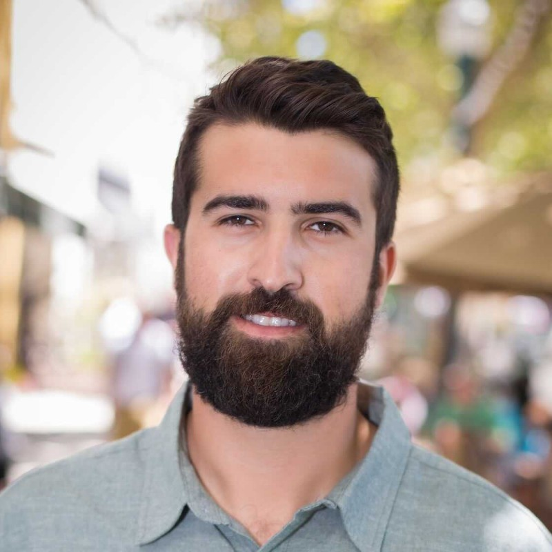
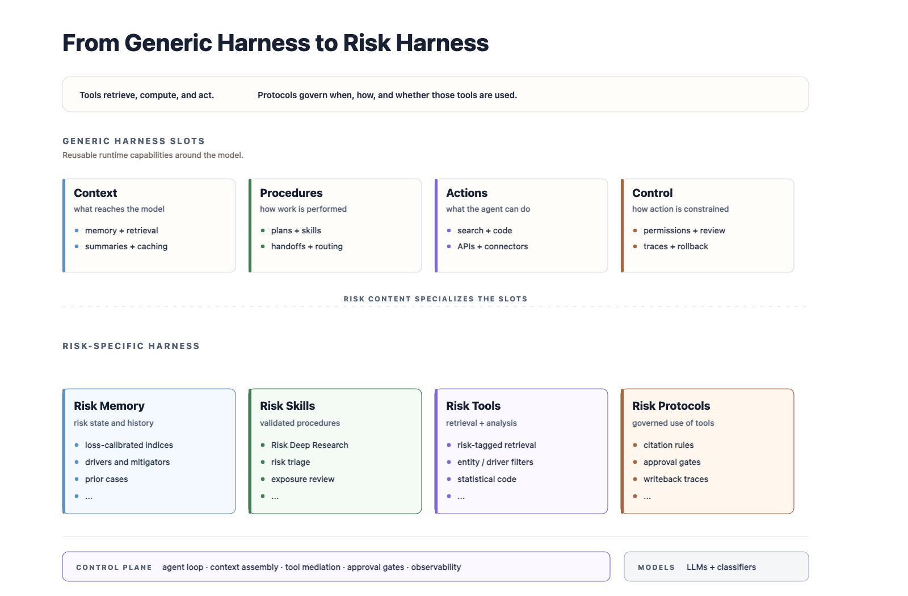
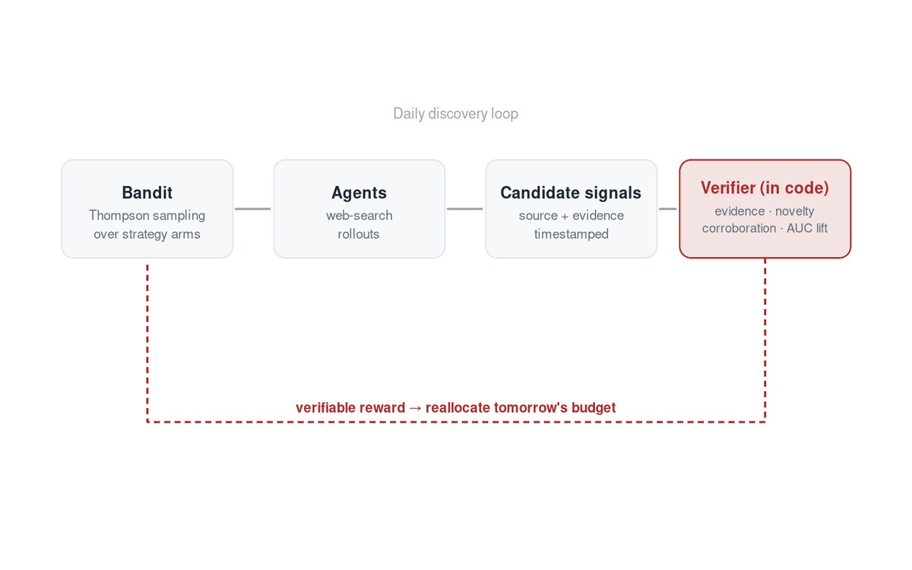
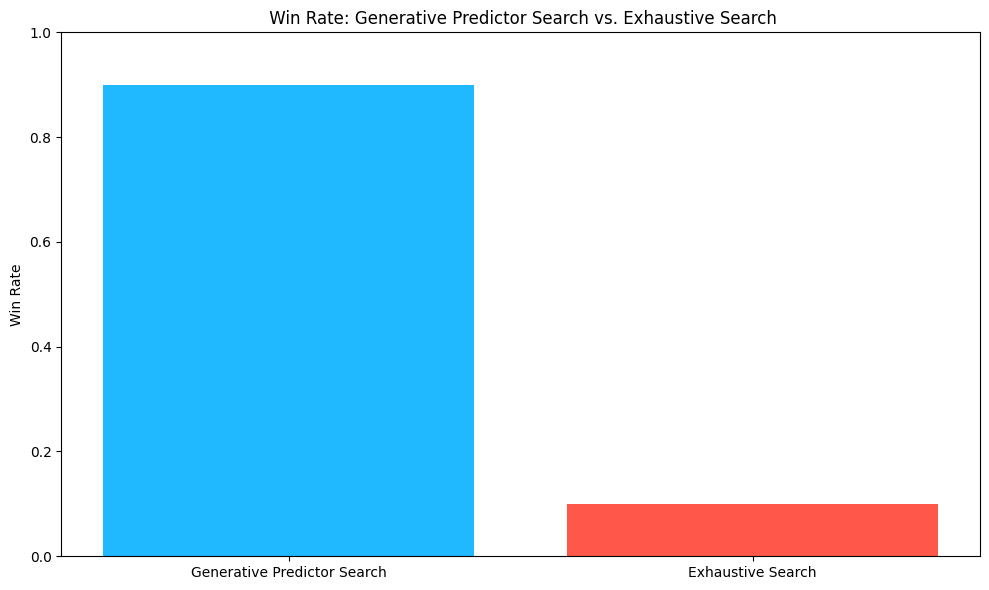
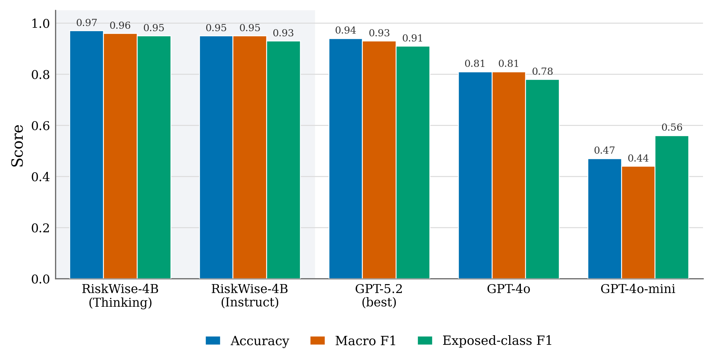
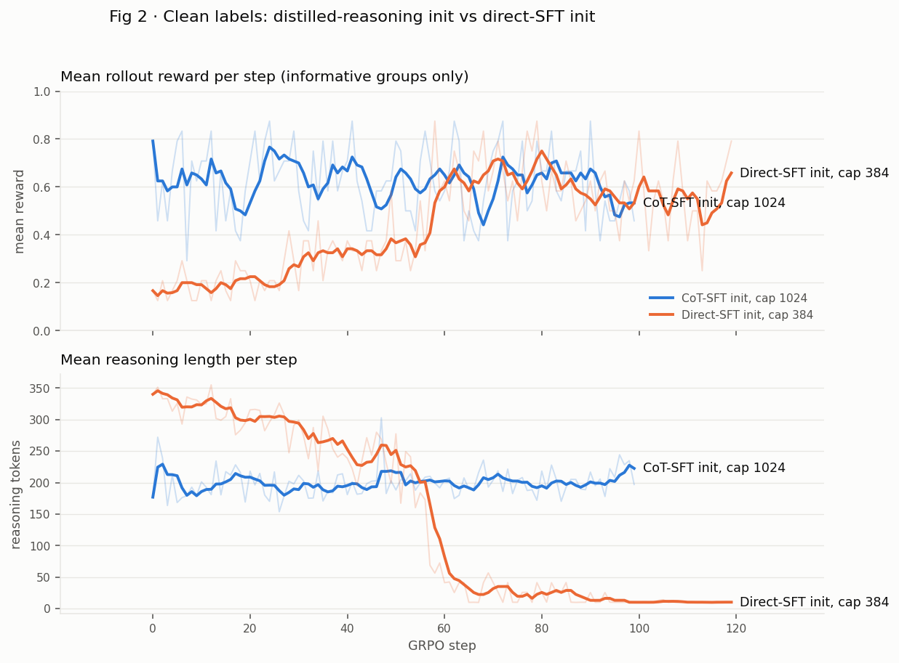

Samuel Kahn
CTO & Head of AI, Tickr Senior AI Advisor, ZG Subpoena Solutions Research Fellow, UC Santa Cruz
I lead AI strategy, build AI systems, and grow AI teams. My first AI job, in 2013, was training recurrent networks to forecast microgrid demand at NASA. Today I'm CTO and Head of AI at Tickr, where I lead the team building RiskWise, an agentic risk-intelligence platform I grew from a founding-scientist project into a product licensed by major insurers and Big Four firms.
I'm also a Research Fellow at UC Santa Cruz, where I work with scientists to apply generative models to hard scientific problems. One is NEO, a conditional generative model for telescope super-resolution, featured by NVIDIA. Another is a deep-learning model to test scientific theory for NASA's Libera mission.
And as a senior AI advisor to ZG Subpoena Solutions, I build the agentic systems and evaluation harnesses behind automated subpoena compliance and law-enforcement response.
Off the clock I sail, climb, ski, photograph the night sky, and spend time with my family.
What I do
Selected work

The Agent Risk Harness
The memory, procedures, permissions, and decision traces an agent needs before you can put a real decision through it.

Verifiable Rewards for Predicting Multidistrict Litigation
A Thompson-sampling bandit allocates research agents under a reward computed in code, feeding a discrete-time hazard model. 0.90 held-out AUC.

Augur: LLM-guided Covariate Search
An LLM proposes and validates covariates for time-series forecasting, cutting MAPE 15.6% and running 13× faster than exhaustive search.

NEO: Photometric Super-Resolution
A conditional GAN that recovers measurement structure ground-based seeing destroys, improving accuracy by factors of 2 to 10. Featured by NVIDIA.

Whispers of Latent Reasoning
A 4B thinking-tuned model beats GPT-5.2 on entity-level risk attribution and keeps the gains even with chain-of-thought suppressed.

What GRPO Actually Optimizes
Can an outcome reward and a hard-example curriculum elicit reasoning that beats direct training on the difficult cases? Six GRPO runs on a production risk classifier say no, and say why.
Research & writing → · Full experience & CV →